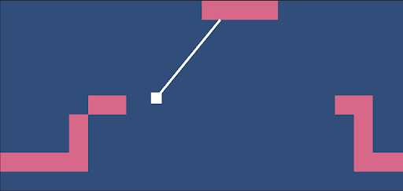

Untitled Platformer
Personal project utilizing Unity skills gathered in classes, a work in progress, and only occasionally updated due to time constraints. Aiming for a 2D physics-based platformer centered around a grappling mechanic to manipulate momentum and alter player trajectory.
